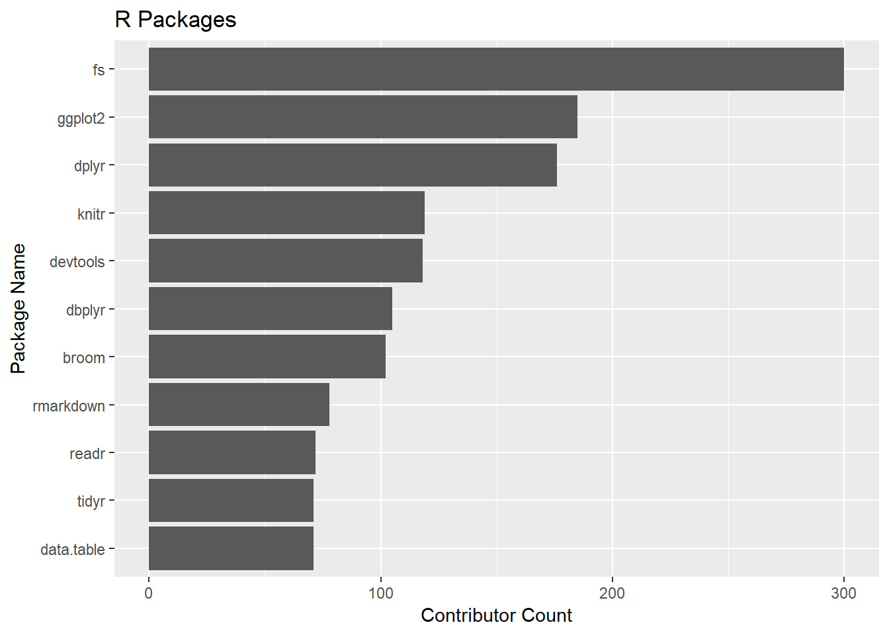
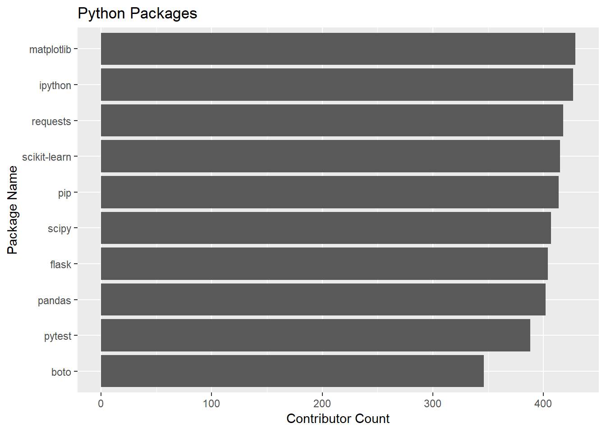
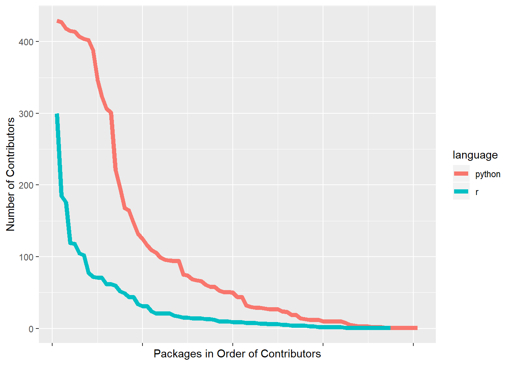
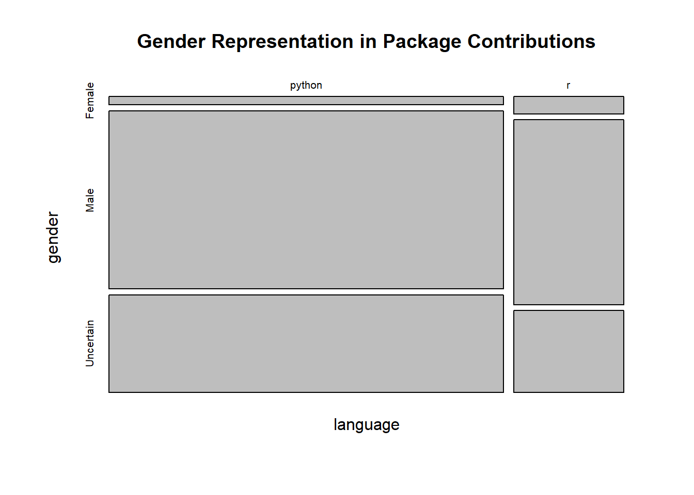

Gender Diversity in R and Python Package Contributors
Introduction
Over the last few years I have really enjoyed becoming part of the R community. One of the best things about the community is the welcoming, inclusive and supportive nature of it. I can’t speak for other communities in the computer or data science worlds but I am well aware of the “brogrammer” culture in some circles that can be off-putting at times. The rise of codes of conduct across the open source world is changing things for the better, I think.
A couple months ago the creator of Python was interviewed saying he thinks open source programming languages have a gender diversity problem. This got me to thinking about whether the inclusive environment I observe in the R community is reflected in female contributions to popular packages and how it compares to the Python world. Most of these packages are maintained on Github which includes all the contributors who use the Github environment to contribute. Let’s take a stab at identifying the gender of these contributors by name.
We will take a multi-stage approach to getting an answer to this question.
- Get the names of the top packages in R and Python.
- Identify which those packages which are maintained on Github.
- Get the contributors to those packages (not as easy as it sounds).
- Get baby names by gender from the U.S. Social Security database.
- Decide whether a name is likely to be female or male.
- Map all package conrtributors to gender, where possible.
As usual I follow a couple conventions. The Tidyverse dialect is used throughout. All functions to fetch data from the Web are wrapped in a test to see if the data was already retrieved. This ensures that this notebook won’t break if things in the wild change. In that event, you must get the data files from this Github repo for this to work.
library(tidyverse)
library(purrr)
library(jsonlite)
library(rvest)
library(data.table) #for downloading CRAN/RStudio logs
library(httr)
library(gh)
library(formattable) #percentIdentify the top packages in R and Python.
Use the cranlogs api from RStudio to get top package downloads from their CRAN mirror. This is potentially a slow function but the top package downloads are pretty stable so we choose five randomly selected dates.
# ----------------------------------------------------------------
#select 5 random days from the last six months
# Read data from RStudio site
# custom version of a function from the installr package. See my Github repo.
source(file="data/download_RStudio_CRAN_data.R")
if (!file.exists("data/r_pkg_list.rdata")) {
RStudio_CRAN_dir <- download_RStudio_CRAN_data(START = Sys.Date()-180,END = Sys.Date(),sample=5)
# read .gz compressed files form local directory
RStudio_CRAN_data <- read_RStudio_CRAN_data(RStudio_CRAN_dir)
dim(RStudio_CRAN_data)
# Find the most downloaded packages
r_pkg_list <- most_downloaded_packages(RStudio_CRAN_data,n=100) %>%
as_tibble(.name_repair = make.names,c("downloads")) %>%
rename(package=X)
save(r_pkg_list,file="data/r_pkg_list.rdata")
} else load("data/r_pkg_list.rdata")With Python the work as already been done for us here: https://hugovk.github.io/top-pypi-packages/. How helpful!
if (!file.exists("data/python_pkg_list.rdata")){
py_pkgs_raw<-read_json("https://hugovk.github.io/top-pypi-packages/top-pypi-packages-365-days.json",
simplifyVector = TRUE)
python_pkg_list <- py_pkgs_raw$rows[1:100,] %>%
as_tibble() %>%
rename(package=project,downloads=download_count)
save(python_pkg_list,file="data/python_pkg_list.rdata")
} else load("data/python_pkg_list.rdata")Get the contributor names for each package repo.
This is the messy stuff. We build functions to get contributors to packages and then the real names of those contributors.
We start with a search for the relevant repo with just repo name and optionally the language. Suppose we want to know the names of the R dplyr contributors. The workflow looks like this:
Call the API:
https://api.github.com/search/repositories?q=dplyr+language:r
Github returns a list of the most relevant results based on their point system. In practice this means the package we care about will be the first item in the list. In this case:
“full_name”: “tidyverse/dplyr”
One problem I encountered is that not all R packages are tagged as being in the R language. In particular, Rcpp and data.table are considered C language repos by Github. This is one reason why not all the top packages appear to have Github repos. I manually grab the contributors for the two packages mentioned above but, out of laziness, I didn’t go looking for any other missing packages. As we will see, most of the top 100 packages for both languages are found so we have a fairly representative sample…I assume.
Once we have the full package name we can create URLs to get the usernames of all the contributors.
Contributor url: https://api.github.com/repos/tidyverse/dplyr/contributors
This JSON object will not contain the “real” names but the links to user profiles. We have to make yet another call to the API to extract the real names. Note some people use pseudonyms so the real name won’t be available.
Calling the endpoint for the username “https://api.github.com/users/romainfrancois”,
will return, among other things:
“name”: “Romain François”
Finally, we get what we are after!
NOTE: You will need a Github API key for this work. Please refer to the documentation for the gh package.
The utility functions are below:
my_gh <- function(end_point) {
return(jsonlite::fromJSON(jsonlite::toJSON(gh::gh(end_point)),simplifyVector = T))
}
json_to_df <- function(json){
return(jsonlite::fromJSON(jsonlite::toJSON(json),simplifyVector = T))
}
# --------------------------------------------------------------------
get_contributor_ids <- function(target_repo){
# loop through all pages of contributors
search_url <- paste0("/repos/",
target_repo,
"/contributors")
contributors_json <- gh(search_url)
# return null in case of no contributors
if (nchar(contributors_json[1])==0) return(NULL)
contrib_node <- contributors_json
repeat {
contrib_node <- try(gh_next(contrib_node),silent=TRUE)
if (is(contrib_node) == "try-error") break
contributors_json <- c(contributors_json,contrib_node)
}
contributor_ids <- json_to_df(contributors_json) %>%
bind_rows() %>%
select(login,url,avatar_url)
return(contributor_ids)
}
# ---------------------------------------------------------------------------
get_name <- function(contrib_url){
user_data <- my_gh(contrib_url)
# just return login name if real name is missing
if (is_empty(user_data$name)) return(user_data$login) else return(user_data$name)
}
# --------------------------------------------------------------------
get_contrib_info <- function(repo_name="dplyr",language=NULL){
print(repo_name)
# we don't know the Github username associated with the package
#so construct a search to get the most likely candidate
search_url <- paste0("/search/repositories?q=",
repo_name)
if (!is.null(language)){
search_url <- paste0(search_url,"+language:", language)
}
# first api call.
repos <- my_gh(search_url) %>% .$items
# return NULL if no repos in Github are found
if (length(repos) == 0) return(NULL)
# get full path for exact match on repo name
# there might be more than one user with repo of the same name
# Since they will be in order of Github "score", take just the first one
target_repo <- repos %>%
select(name,full_name) %>%
filter(name == repo_name) %>%
pull(full_name) %>%
.[1] %>%
unlist()
# return NULL if no repos in Github are found
if (is.null(target_repo)) return(NULL)
#second api call
# get user urls for all contributors
contributor_ids <- get_contributor_ids(target_repo)
# return null in case of no contributors
if (is.null(contributor_ids)) return(NULL)
if (is.null(language)) language <- "none"
contrib_names<-map(contributor_ids$url,get_name) %>% unlist()
print(paste(length(contrib_names)," contributors"))
contrib_info <- tibble(language=language,
package=repo_name,
path=target_repo,
contributor=contrib_names) %>%
bind_cols(contributor_ids) %>%
select(-url) %>% unnest()
return(contrib_info)
}
Now let’s do the work of iterating through the package lists. As mentioned above, I get two packages manually before looping through the remaining packages. I chose to use a for loop, as opposed to map or apply so we can save the intermediate results. It is a fairly slow process and you may reach your API data limit before finishing. You don’t want to start from scratch halfway through! If you have to do this in multiple sessions, manually edit the package lists to include just what is left to retrieve.
load("data/r_pkg_list.rdata")
if (!file.exists("data/r_pkg_contributors.rdata")){
r_pkg_contributors <- NULL
# Rcpp package is categorized as C++, not R, langauge so get it manually.
contrib_info_rcpp <- get_contrib_info("Rcpp")
contrib_info_rcpp <- contrib_info_rcpp %>% mutate(language = "r")
r_pkg_contributors <- bind_rows(r_pkg_contributors,contrib_info_rcpp)
r_pkg_list <- r_pkg_list %>% filter(package != "Rcpp")
# data.table package is categorized as C++, not R, langauge so get it manually.
contrib_info_dt <- get_contrib_info("data.table")
contrib_info_dt <- contrib_info_dt %>% mutate(language = "r")
r_pkg_contributors <- bind_rows(r_pkg_contributors,contrib_info_dt)
r_pkg_list <- r_pkg_list %>% filter(package != "dt")
# use for loop instead of map or apply so we can save intermediate steps
for(pkg in r_pkg_list$package) {
r_pkg_contributors <- r_pkg_contributors %>%
bind_rows(get_contrib_info(pkg,language="r"))
save(r_pkg_contributors,file="data/r_pkg_contributors.rdata")
}
} else load("data/r_pkg_contributors.rdata")
load("data/python_pkg_list.rdata")
if (!file.exists("data/python_pkg_contributors.rdata")){
python_pkg_contributors <- NULL
for(pkg in python_pkg_list$package) {
python_pkg_contributors <- python_pkg_contributors %>%
bind_rows(get_contrib_info(pkg,language="python"))
save(python_pkg_contributors,file="data/python_pkg_contributors.rdata")
}
} else load("data/python_pkg_contributors.rdata")
#Let's merge the two datasets to simplify handling.
pkg_contributors <- bind_rows(r_pkg_contributors,python_pkg_contributors)Analysis
Since we went through a lot of trouble to get this data, let’s do some exploratory work on package contributors in general before we come to the main question of this post.
load("data/r_pkg_contributors.rdata")
#summarize what we found
r_pkg_contributors %>%
group_by(package) %>%
summarise(contributors=n()) %>%
summary()## package contributors
## Length:75 Min. : 1.00
## Class :character 1st Qu.: 3.50
## Mode :character Median : 10.00
## Mean : 30.49
## 3rd Qu.: 32.50
## Max. :300.00
There are 75 out of the top 100 R packages with repos we easily found on Github (remember, I’m lazy). The median number of contributors is 10. 300 people have contributed to the fs package, which is implements the linux file library libuv.
How did we do with the Python packages?
load("data/python_pkg_contributors.rdata")
#summarize what we found
python_pkg_contributors %>%
group_by(package) %>%
summarise(contributors=n()) %>%
summary()## package contributors
## Length:81 Min. : 1.0
## Class :character 1st Qu.: 10.0
## Mode :character Median : 44.0
## Mean :101.7
## 3rd Qu.:116.0
## Max. :429.0
Right off the bat, it looks like Python package development is more of a community effort. The median package has 44 contributors. The venerable matplotlib takes the prize of most contributors at 429.
Let’s look at the most contributed-to packages. Remember this is NOT a ranking of the most popular packages. It is a ranking of the number of contributors among the most popular packages. For R, the takeaway is that the Tidyverse is very much a shared effort.
pkg_contributors %>%
filter(language=="r") %>%
group_by(package) %>%
summarise(contributors=n()) %>%
arrange(contributors) %>%
top_n(10,wt=contributors) %>%
ggplot(aes(as_factor(package),contributors)) +
geom_col()+
labs(title = "R Packages", x = "Package Name",y = "Contributor Count") +
coord_flip()
pkg_contributors %>%
filter(language=="python") %>%
group_by(package) %>%
summarise(contributors=n()) %>%
arrange(contributors) %>%
top_n(10,wt=contributors) %>%
ggplot(aes(as_factor(package),contributors)) +
geom_col()+
labs(title = "Python Packages", x = "Package Name",y = "Contributor Count") +
coord_flip()
Let’s compare the number of contributors for the top packages in both languages, we find that Python packages tend to have many more contributors.
summary_contrib<-pkg_contributors %>%
group_by(language,package) %>%
summarise(num_contributors=n()) %>%
group_by(language) %>%
mutate(ranking=rank(num_contributors,ties.method = "first")) %>%
mutate(ranking=max(ranking)-ranking+1) %>%
arrange(ranking)
summary_contrib %>%
ggplot(aes(ranking,num_contributors,group=language,color=language)) +
geom_path(size=2) +
theme(axis.text.x=element_blank()) +
labs(main="Top Python Packages Show More Collaboration",
x="Packages in Order of Contributors",
y="Number of Contributors") Who are the most prolific contributors among the top packages? We note, with R, that many of the top packages are part of the tidyverse ecosystem and will have a very high degree of overlap among package contributors. No one Tidyverse package is a good proxy of the contributors to the rest, however.
Who are the most prolific R package contributors?
pkg_contributors %>%
filter(language=="r") %>%
group_by(contributor) %>%
summarise(packages=n()) %>%
arrange(desc(packages))## # A tibble: 1,299 x 2
## contributor packages
## <chr> <int>
## 1 Hadley Wickham 45
## 2 Jim Hester 36
## 3 Kirill Müller 31
## 4 Mara Averick 26
## 5 Jennifer (Jenny) Bryan 24
## 6 Gábor Csárdi 19
## 7 Hiroaki Yutani 18
## 8 Lionel Henry 16
## 9 Yihui Xie 16
## 10 Christophe Dervieux 15
## # ... with 1,289 more rowsWho are the most prolific Python package contributors?
pkg_contributors %>%
filter(language=="python") %>%
group_by(contributor) %>%
summarise(packages=n()) %>%
arrange(desc(packages))## # A tibble: 6,194 x 2
## contributor packages
## <chr> <int>
## 1 Jon Dufresne 30
## 2 Hugo 27
## 3 Marc Abramowitz 24
## 4 Jason R. Coombs 18
## 5 Jakub Wilk 17
## 6 Alex Gaynor 16
## 7 Anthony Sottile 15
## 8 Felix Yan 15
## 9 Ville Skyttä 15
## 10 Donald Stufft 14
## # ... with 6,184 more rowsPeople who swing both ways.
Who are the awesome humans who have contributed to both top R and Python packages? Grouping by login name ensures that we don’t get two different people with the same name but we drop it for display. There are 44 people who have contributed to some of both the top Python and R packages.
two_lang_contrib <- pkg_contributors %>%
group_by(login,contributor,language) %>%
summarise(packages=n()) %>%
spread(language,packages) %>%
ungroup() %>%
select(-login)
two_lang_contrib <- two_lang_contrib[complete.cases(two_lang_contrib),] %>%
arrange(desc(r))
two_lang_contrib ## # A tibble: 46 x 3
## contributor python r
## <chr> <int> <int>
## 1 Craig Citro 3 7
## 2 Elliott Sales de Andrade 2 5
## 3 Philipp A. 4 4
## 4 Aaron Schumacher 2 3
## 5 Ayappan 1 2
## 6 Chapman Siu 1 2
## 7 Ethan White 1 2
## 8 Katrin Leinweber 2 2
## 9 Mark Sandan 1 2
## 10 Tim D. Smith 3 2
## # ... with 36 more rowsTry to determine gender of contributors.
I hope you found the digressions above interesting. Now let’s do what we came to do.
To flag names by gender we use the Social Security baby names database for 1990. It is important to be aware of the limitations of this.
-
I used 1990 because I guess that is close to the average birth year of most package contributors. Is it? My birth year is (cough) 1958. I am an outlier.
-
The dataset contains registered births for only the United States. Many contributors were born, or live today, outside the U.S. The U.S, while more of a melting pot than many countries, will have a subset of global names.
-
Transliteration of names from languages that don’t use Western characters don’t follow hard and fast rules. The same name might be transliterated multiple ways. “Sergey” or “Sergei?”
-
Ordering of surname and given name. Chinese names typically are reported surname first. Many Chinese people follow western conventions in global settings but maybe not. I may be tagging the surname as the given name in some (many?) cases.
-
Many names are used for “both” (yes, I know) genders. I choose an aribitrary ratio of gender predominance of 75% to pronounce certainty. Noteworthy: “Hadley” is in our “Uncertain” bucket.
-
Gender identity becomes a choice at some age. People may choose (or not choose) a gender inconsistant with the identification in this dataset.
-
Some people use pseudonyms that are not common names.
Knowing all that, let’s plunge on.
You can find the link to the baby names data set here. There are CSV files for each birth year in a zip file. Download, extract and import the file called “yob1990.txt”
names_90 <- read_csv("data/yob1990.txt",
col_names=c("first","gender","count"),
col_types = list(col_character(),col_character(),col_number()))
names_90 <- names_90 %>%
mutate(first = tolower(first)) %>%
select(first,gender,count) %>%
spread(gender,count) %>%
mutate_if(is.numeric, ~replace(., is.na(.), 0)) %>%
mutate(prob_female=F/(F+M))
cutoff = 0.75 # threshhold probability for calling gender
names_90 <- names_90 %>% mutate(gender="Uncertain")
names_90 <- names_90 %>% mutate(gender=if_else(prob_female>cutoff,"Female",gender))
names_90 <- names_90 %>% mutate(gender=if_else(prob_female<(1-cutoff),"Male",gender))
names_90_subset <- names_90 %>% select(first,gender)Now let’s join the baby names to our contributors.
pkg_contributors <-pkg_contributors %>%
separate("contributor",into=c("first"),remove=FALSE,extra="drop")
genders <- pkg_contributors %>%
select(-path,-avatar_url,-login) %>%
mutate(first = tolower(first)) %>%
left_join(names_90_subset,by="first") %>%
mutate_all(~replace(., is.na(.),"Uncertain")) Our answer now looms into view. Base R has a nice tile plot that illustrates the proportions and sizes of the cells in a crosstab so we’ll use that.
agg_gender <- genders %>%
select(language,gender) %>%
table()
agg_gender %>% plot(main="Gender Representation in Package Contributions")
Right away we note the large fraction of “Uncertain” genders, about a third. As we noted above, there are many more contributors to Python packages, as reflected in the width of the tiles. We also can see that the fraction of women contributing to R packages looks greater.
For our ultimate conclusion, let’s assume that the “Uncertain” gender breaks into male and female in the same proportions that already exist.
agg_gender <- genders %>%
filter(gender != "Uncertain") %>%
select(language,gender) %>%
table() %>% prop.table(margin=1)
percent(agg_gender,digits = 0)## gender
## language Female Male
## python 4% 96%
## r 8% 92%There it is. This was certainly a lot of work to get to a four cell crosstab but we have our answer. Women contribute to the top R packages at twice the rate of top Python packages. Can we speculate as to a reason? R is almost exclusively a data science language and most of the top packages reflect that. Python is more of a general purpose language that is also quite popular for data science, but as we look down the list of most popular Python packages we see more utility packages. Perhaps women are less represented in general computer science than they are in data science. With both languages, more than 90% of the contributors are men. Clearly, we have a way to go with gender diversity in both communities. Narrowing down the package list to focus on just data science packages is an avenue for further exploration.
As a bonus, what are the most “feminine” packages?
genders %>% group_by(language,package,gender) %>%
filter(gender != "Uncertain") %>%
count() %>%
spread(gender,n) %>%
mutate(frac_female = Female/(Female+Male)) %>%
arrange(desc(frac_female))## # A tibble: 147 x 5
## # Groups: language, package [147]
## language package Female Male frac_female
## <chr> <chr> <int> <int> <dbl>
## 1 r cellranger 1 1 0.5
## 2 r hms 1 2 0.333
## 3 r rprojroot 1 2 0.333
## 4 r tidyselect 3 6 0.333
## 5 r forcats 7 18 0.28
## 6 r ellipsis 1 3 0.25
## 7 python decorator 2 7 0.222
## 8 r scales 5 18 0.217
## 9 r tidyr 11 41 0.212
## 10 r pillar 1 4 0.2
## # ... with 137 more rowsThat’s interesting. There are 28 popular packages across both languages where more than 10% of the contributors are female. Of those 25 are R packages and only 3 are Python packages.
There are other dimensions of diversity we might look at that are beyond the ability to infer from names. It would be nice if we could see actual images of all contributors so we might make some observations about racial diversity or remove some of the ambiguities around gender identification. This approach would come with its own set of challenges and risks, however.
As mentioned at the start of this ariticle, there are many reasons to take our conclusions with a grain of salt. I certainly do not claim this analysis is definitive. A better approach might be to simply survey the contributors. Still, the results conform with what intuition might provide.
I welcome critiques of my methods or conclusions. I have a sneaky suspicion I got the Github contributor names the hard way. Thanks for reading!